Kibana Guide: Explore Logs in Discover
|
This content was generated with the assistance of AI and should be verified against the official documentation before being relied on in production. |
Checked on 2026-11-11 against Kibana 9.5.x.
What you build
You search the Bookshelf log records in Discover and shape what you see: you narrow the time range, write KQL queries, add filter pills, put the fields you care about in columns, read one document in full and split the histogram by severity. At the end you save the result as the Discover session Bookshelf errors (guides), which a dashboard can show as a panel later.
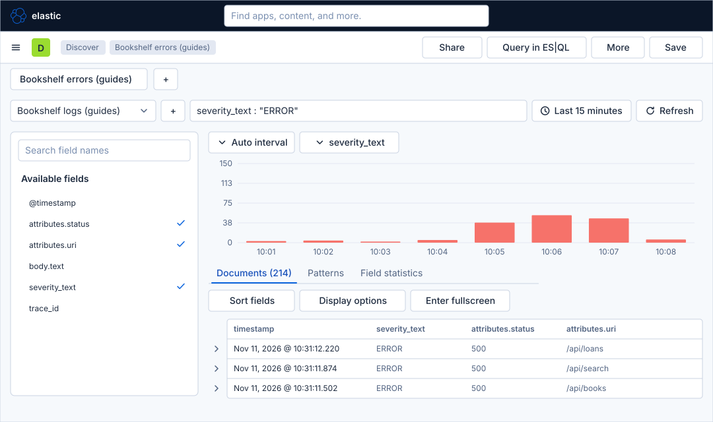
Before you start
-
Start the Kibana profile of the hands-on lab and wait about a minute:
cd lab docker compose --profile kibana up -d -
Open http://localhost:5601 and sign in as
elasticwith the passwordlab-elastic-password. When Kibana opens its full-screen welcome page, click Explore on my own. -
Do the previous guide, Upload a file and create a data view. This guide needs the data view Bookshelf logs (guides) with the index pattern
logs-generic.otel-defaultand the time field@timestamp. -
The searches need error records to find. Make the Bookshelf service fail for a minute, wait a minute more, and then restore normal traffic. The records stay in Elasticsearch, and the default time range of 15 minutes covers them for the rest of this guide:
curl -X POST localhost:8090/mode/failing sleep 60 curl -X POST localhost:8090/mode/normal -
The fields used are
severity_text(INFOorERROR),attributes.status(a number such as 200, 404 or 500),attributes.uri(the path of the request) andbody.text(the log line). -
The lab runs with a trial licence. Discover itself needs only the basic licence; the tabs Patterns and Field statistics that you see in the result area need the trial and are the topic of the next guide.
-
The figures are drawings of the Kibana 9.5 user interface, not screenshots, so small details can differ from your screen. A highlighted box with a number marks the control of the step with the same number. Where Kibana’s own screen was not drawn in detail (for example the save dialog), the figure is generic and the step names the control by its role.
Steps
Discover is one screen with a few regions. The map shows them with numbers; come back to it when a control is not where you expect it.
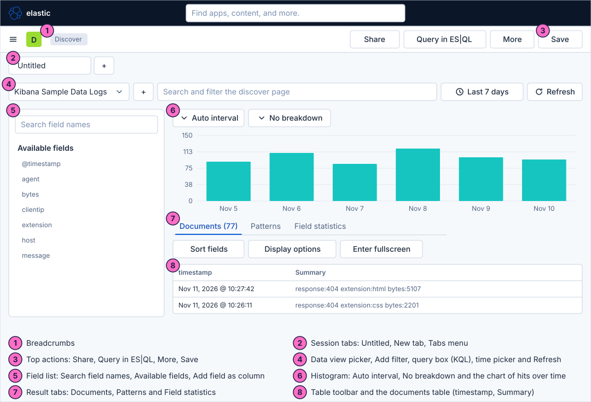
Open Discover and choose the data
-
Click the menu button, Toggle primary navigation, and under Analytics click Discover. Discover opens with one session tab named Untitled.
-
Open the data view picker at the left of the filter row and choose Bookshelf logs (guides). The picker shows the data view that Discover used last, or the default one.
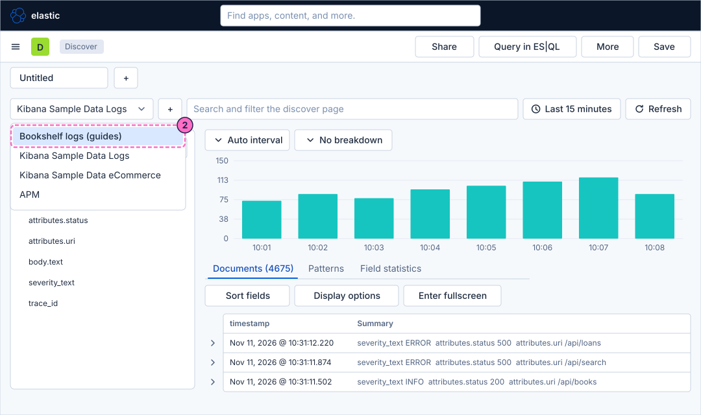
-
Check the time picker at the right of the filter row. It must say Last 15 minutes, the default. The histogram under the filter row draws the number of log records over that range, and the Documents tab under it shows their total.
-
Zoom in: drag across a few bars of the histogram with the mouse. Discover sets the time range to the part you selected and redraws the chart and the table. The time picker now shows that absolute range. Set it back to Last 15 minutes before the next step.
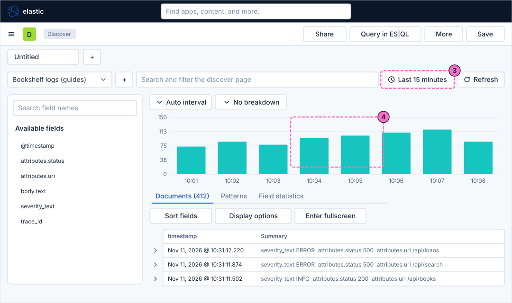
Search with KQL
-
Search a value of a field. Type the query below in the query box, which says "Search and filter the discover page", and press Enter. Field name, a colon, the value; the text in quotes must match exactly:
severity_text : "ERROR"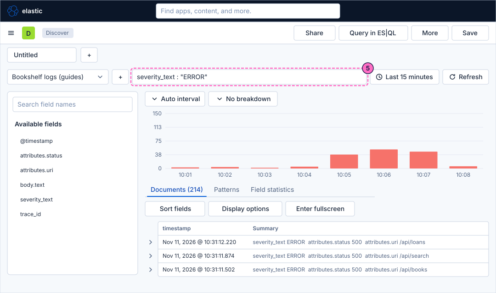
-
Combine two conditions with
and, and use a range with a comparison operator. The query below keeps the error records whose status is 500 or more:severity_text : "ERROR" and attributes.status >= 500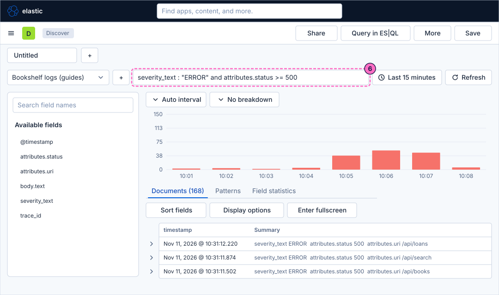
-
Use
orto accept either of two values:attributes.status : 404 or attributes.status : 500 -
Use a star as a wildcard. The star stands for any characters and works only on a value written without quotes; the query below finds the paths that start with
/api/b, such as/api/books:attributes.uri : /api/b*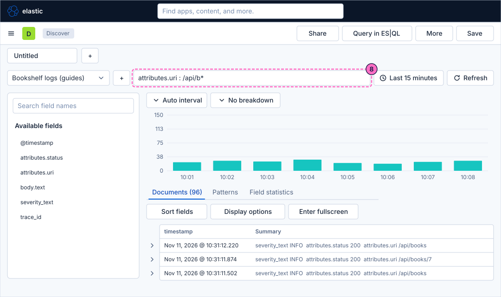
Filter with pills
-
Clear the query box (select its text, delete it and press Enter), so that only the filters below narrow the search.
-
Click Add filter, the plus button at the left of the query box. In the dialog Add filter that opens, open Select a field and choose
severity_text, open Select operator and choose is (the list also has is not, is one of, is not one of, exists and does not exist), typeERRORas the value and click Add filter. A pill labelled with the field and the value appears under the filter row. -
Click the pill. Its menu offers Pin across all apps, Edit filter, Exclude results, Temporarily disable and Delete; choose Pin across all apps. A pinned filter stays in force when you move to other apps, such as a dashboard.
-
Add a second filter on the field
attributes.uriwith the value/api/search. Click its pill and choose Exclude results. The pill now reads as a negation,NOT attributes.uri: /api/search. -
Open the menu of the second pill again and choose Temporarily disable. The pill is greyed out and the documents that it excluded come back; open the menu again and choose the same entry, which now reads Re-enable, to switch it on again. The entry Delete removes a pill for good.
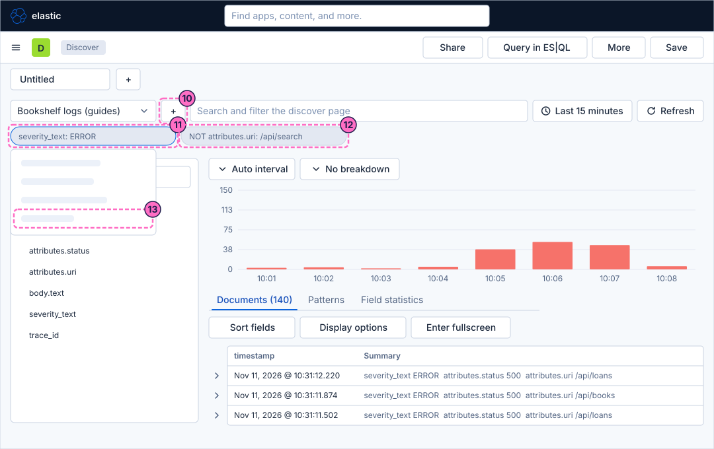
Read the fields and the documents
-
In the field list at the left, click the field name
severity_text. A popover opens with the most frequent values of the field and the share of the documents that carry each, soINFOandERRORwith their percentages. The values come from a sample of the documents in the time range.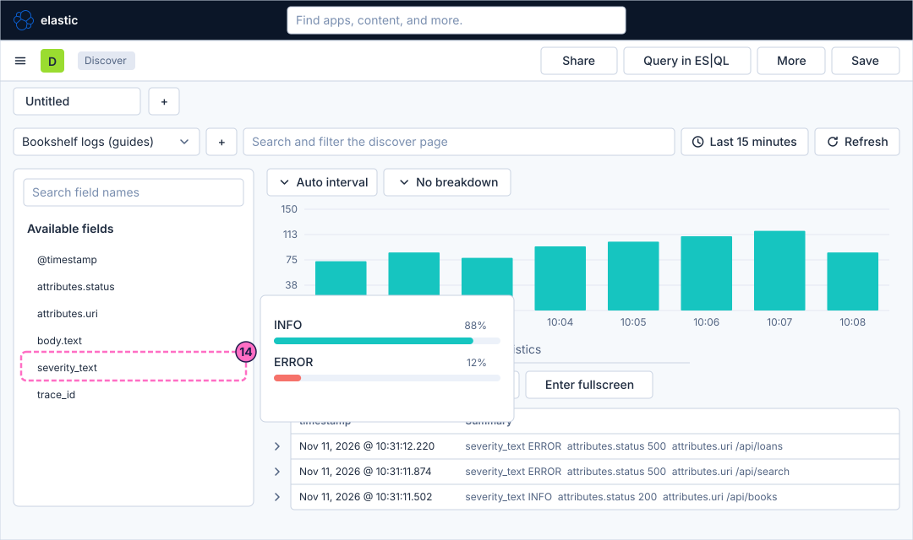
-
Point at the field
severity_textin the list and click its button Add field as column. The table gets a column with that name. -
Do the same for
attributes.status. -
Do the same for
attributes.uri. The table now has the columns timestamp,severity_text,attributes.statusandattributes.uriinstead of the Summary column.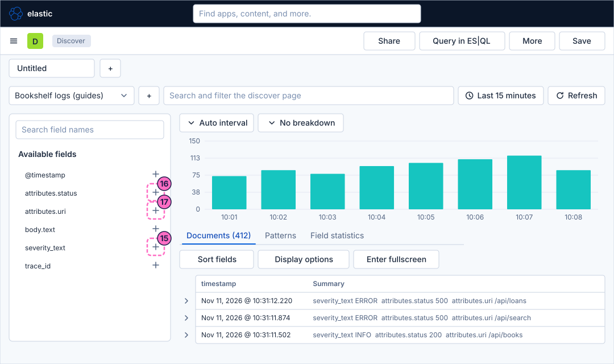
-
Click the expand button at the start of the first row (Toggle dialog with details). A flyout titled Document opens at the right with the tabs Table and JSON; the table lists every field of the document and its value, including
body.text, and has the switches Selected only and Hide null fields. -
In the flyout, click the icon View surrounding documents next to Actions at the top: it shows the documents recorded just before and after this one. Use it to read what the service logged around an error. Close the flyout, or use the browser’s back button, to return to the table.
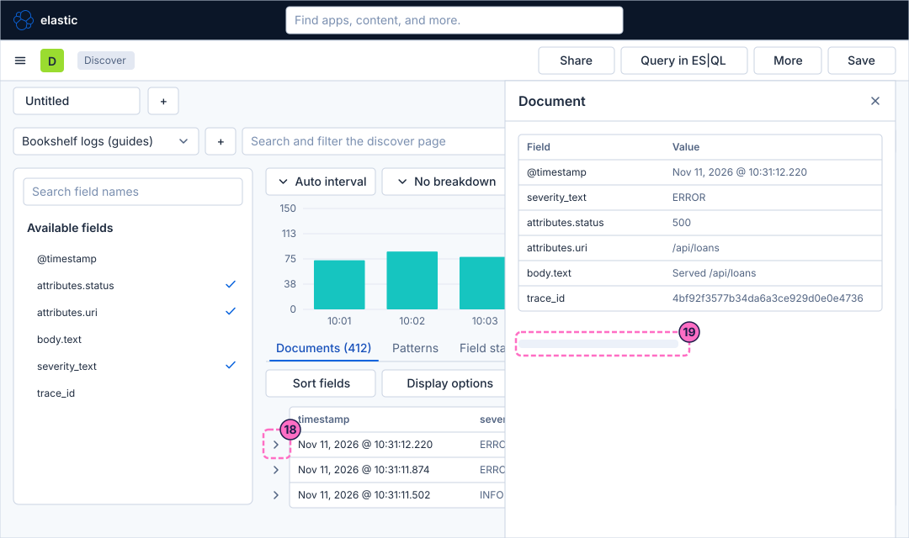
Break the chart down
-
Above the histogram, click No breakdown.
-
In the list that opens, choose the field
severity_text. The bars are now stacked, one colour per value, so you see when theERRORrecords appeared among theINFOones. The button shows the field name.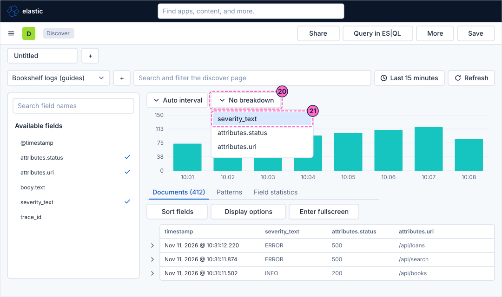
Use tabs and save the session
-
Click New tab, the plus button next to the session tab at the top. A second tab opens: a separate Discover session with its own search, so you can compare two searches side by side without losing the first.
-
Click the first tab to return to the search you built. The result tabs Documents, Patterns and Field statistics under the histogram are a different thing: they change what the area below shows, and the next guide uses the last two.
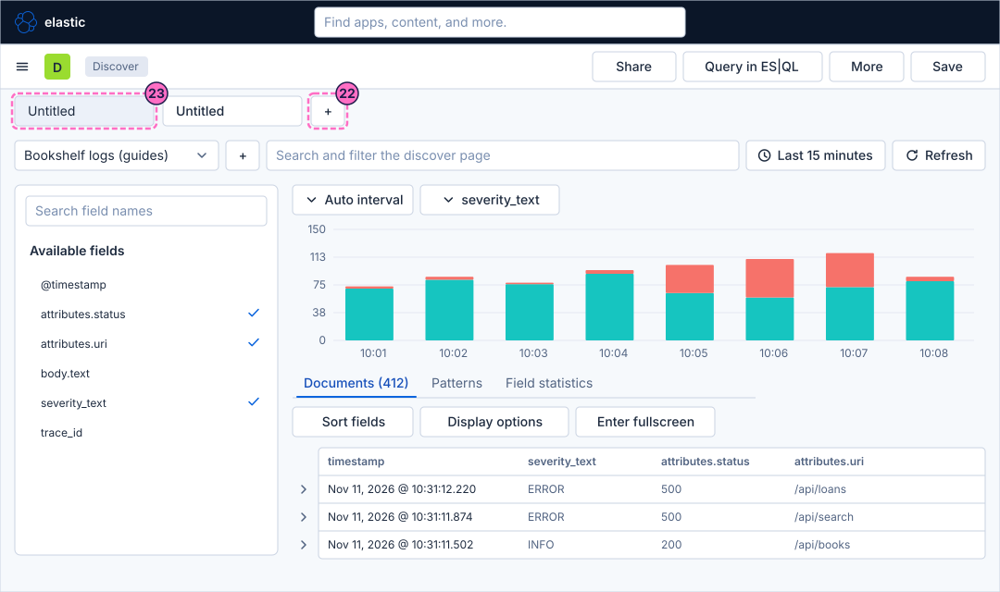
-
Click Save at the top right.
-
In the dialog Save Discover session, type
Bookshelf errors (guides)in Title. Leave Store time with Discover session off and Add to dashboard on None. -
Click Save and add to library. The tab and the breadcrumbs now carry the name of the session.
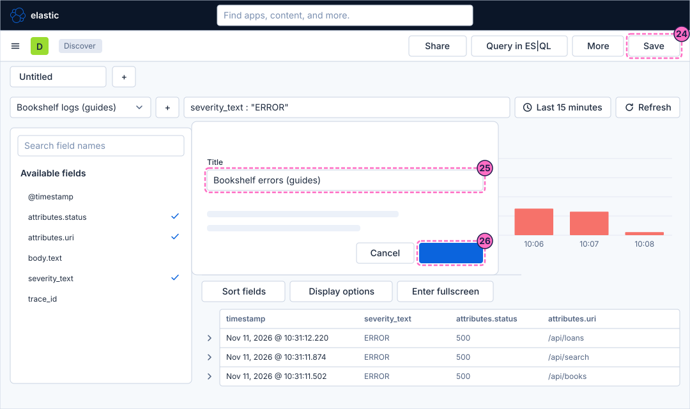
Check the result
The tab is called Bookshelf errors (guides) and the query box holds your last query (severity_text : "ERROR" if you typed it again for the save). The table shows the columns of step 17, and the histogram is stacked by severity_text.
Open Discover → More → Open session to see the saved session in the list.
To see the chart react, make the service fail again, restore normal traffic after a minute, and press Refresh in the filter row:
curl -X POST localhost:8090/mode/failing
curl -X POST localhost:8090/mode/normalThe ERROR stack grows for the minute of the failure.
Variations
-
Click Share in the top actions to copy a link to the session. The link keeps the query and the filters; the option to use an absolute time range makes it show the same minutes for whoever opens it.
-
Click the Display options button of the table toolbar to change the density of the rows and how many lines a cell shows.
-
Query in ES|QL in the top actions switches the same screen to the piped query language, which the next guide introduces.
What can go wrong
| Symptom | Cause | Fix |
|---|---|---|
The histogram is empty and the table says that no results were found |
The time picker covers a range without log records, or the data view is another one. |
Choose Last 15 minutes or Last 24 hours, check the data view picker, and send |
A query is rejected with a syntax error |
A quote is missing, or a value with spaces or special characters is not quoted. |
Write text values in double quotes, as in the examples, and check that |
The wildcard query finds nothing |
The value was written in quotes, so the star was read as a plain character. |
Write |
There is no |
The failing traffic was never sent, or it is older than the time range. |
Send the commands of Before you start again and press Refresh. |
The columns do not appear in the table |
The button was clicked on another field, or the field list was filtered by the search box. |
Clear Search field names and click Add field as column on the right row. |
The saved session does not keep the filters you expected |
A filter was deleted or disabled before saving. |
Enable the pills before you save, then use Save again. |
Clean up
Keep the saved session Bookshelf errors (guides): a later guide shows it on a dashboard. Restore the service to normal traffic if you have not yet:
curl -X POST localhost:8090/mode/normalTo remove the session together with everything else the lab stores, stop the profile with docker compose --profile kibana down -v.
Where to go next
-
Previous guide: Upload a file and create a data view.
-
Next guide: Field statistics, patterns and ES|QL in Discover, which uses the result tabs and builds ES|QL queries step by step.
-
Reference: Data views and Discover covers the screen and its modes in full, and Querying with KQL, ES|QL and PromQL lists the KQL syntax and compares it with the other languages.